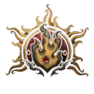
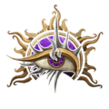

La taberna de Saturno
¿Qué es Dungeons and Dragons?
Dungeons and Dragons (Dragones y mazmorras) es un juego de rol y fantasía heróica actualmente publicado
por Wizards of the Coast. El juego original fue diseñado en
Estados Unidos por Gary Gygax y Dave Anderson y publicado por primera vez en 1974 por la compañía de Gygax,
Tactical Studies Rules (TSR).
Originalmente derivado de juegos de tablero jugados con lápiz, papel y dados,
la primera publicación de Dungeons & Dragons es bien conocida como el principio de
los juegos de rol modernos y por consiguiente de la industria de los juegos de rol.

Héroes de D&D
¿Cómo se juega DnD?
Cada jugador interpreta a un héroe con habilidades únicas y toma decisiones en un mundo de fantasía.
El DM describe la historia y los desafíos, mientras los jugadores lanzan dados para saber si sus acciones tienen éxito.
Los jugadores describen sus acciones (como atacar, convencer o buscar algo).
Si la acción puede fallar, el DM pide una tirada de dado de 20 caras (d20).
Se suma una habilidad del personaje (como Fuerza o Carisma), y si
el resultado alcanza o supera una dificultad establecida por el DM, la acción tiene éxito.
Así se combinan estrategia, suerte y narrativa.
El universo de DnD
Dungeons & Dragons tiene varias expansiones que añaden nuevos contenidos,
reglas, personajes y aventuras al juego.
Las principales expansiones están divididas en manuales,
módulos de aventuras y guías de ambientación.
Algunas de estas son:
- Tomb of Horrors (1978): Es una de las aventuras más icónicas de la historia de D&D. Creada por Gary Gygax, el co-creador de D&D, "Tomb of Horrors" es conocida por su extrema dificultad, trampas mortales y desafíos enigmáticos. Los jugadores deben adentrarse en una tumba llena de peligros para enfrentar a un poderoso lich llamado Acererak.
- Curse of Strahd (2016): Esta expansión introduce a Strahd von Zarovich, un vampiro gobernante del mundo de Barovia, un reino sombrío dentro de la ambientación de Ravenloft. Es una aventura de horror gótico en la que los jugadores deben enfrentarse a Strahd para liberarse de su maldición, mientras exploran un mundo oscuro y atmosférico.
- Waterdeep: Dragon Heist (2018): Esta expansión se desarrolla en la ciudad de Waterdeep, una de las ciudades más emblemáticas de los Reinos Olvidados. Los jugadores se embarcan en una búsqueda para encontrar un tesoro oculto en la ciudad, pero deben lidiar con facciones rivales y misterios que se despliegan en cada esquina de la metrópolis.
- Vecna lives! (1990): Esta es la primera aventura en la que el temible lich Vecna es el principal antagonista, y donde se explora su ascensión de lich a semidiós. Fue un hito para el personaje, ya que no solo se le presenta como un villano, sino que se explora profundamente su historia y motivaciones.
- Tomb of Annihilation (2017): Aventura en la selva de Chult. Combina exploración, dinosaurios, muertos vivientes y una carrera contra el tiempo para detener una maldición.
- Storm King's Thunder (2016): Una campaña épica donde los jugadores se enfrentan a gigantes descontrolados y deben restaurar el orden en el norte de los Reinos Olvidados.
Clases
Dentro del mundo de DnD puedes jugar en distintos roles, estos se llaman clases, cada clase desempeña un rol
dentro de la partida, teniendo sus propias habilidades especiales y suma de puntos.
Las clases más icónicas son:
-

-

-

-

-

-

-

-

-

- 
- 
-